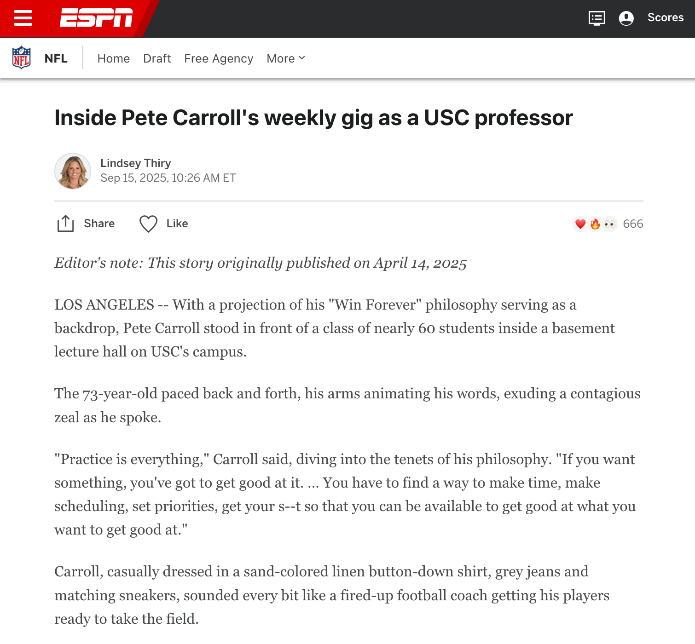

Intro
Last year, I landed several interviews and at least two offers (so far) at some of the top companies in my industry after years of sort of being stuck and not even getting to the interview stage.
In today's article, I want to briefly summarize what I think helped me break through along with useful frameworks which I think anyone can apply when similarly trying to land their dream job or internship.
The framrworks will translate to finding your next opportunity and also to your career in general.
Where These Frameworks Come From
You'll recognize a lot of the ideas that I bring up here as being from some of the other articles I've written and posted on this website.
During my time at USC, I got to meet a lot of very successful people — founders, entrepreneurs, athletes, super bowl champion coaches, national champions, world-class sketch comedians/youtubers, and, of course, many successful engineers — and I learned their perspectives on how to be successful.
I was able to apply some of those principles right away, while some of the other advice took a long time to digest and figure out how to apply it to my personal life and career.
But eventually, through a lot of trial and error, I figured out what worked and I'm going to outline all of that below.
Rule #1: "Product-Market Fit" Is the North Star for Engineering Careers
I essentially stole this quote directly from Harry Gestetner, whom I met in February 2025 during my FanFix visit, where when asked how to create a successful startup, he said the most important thing is that:
"Product-Market Fit is the North Star for All Entrepreneurs."
In short, product-market fit is when you create something that a group of people or customers want and are actually willing to pay for, with a key indicator of reaching PMF being when your business grows organically and exponentially after a certain point without a ton of paid marketing or additional push behind it.
In careers, you similarly want to choose a career in something that there's strong demand for from the market — you want to build skills and talent in areas that companies are actually willing and able to pay for.
So for example, for me over the last year or two, my PhD topic had changed to Spacecraft Contamination. There's only a handful of contamination jobs out in the world though, so I wasn't getting any interviews for that since there's not much of a market for it, despite being a potential PhD holder and one of the best people in the world in that topic.
On the other hand, as soon as I started marketing myself as a GNC Engineer, I started getting interviews left and right, with some of those even leading to job and internship offers.
The reason for this is because almost every space company hires for GNC Engineers AND usually can't hire enough qualified GNC Engineers since it's a relatively rarified skillset.
If I go back to Harry's example — when he started FanFix, he had ZERO revenue for months despite the fact that they hired a Professional Dev Shop and paid $100,000 to create their app. But once they found product-market fit a few months in, they went on to make $17,000 in their first month, after which revenue approximately doubled every month thereafter.
Similarly, when you're picking a career and you pick one that there's significant demand for — where there's demand for your skills and far more of it than supply available — you'll similarly start to hit these type of "magic moments" that lead to explosive growth in opportunities, much like I started to get once I switched back into GNC and started landing interviews there.
To sum this point up: make sure you pick something that has a strong "product-market fit," and finding your dream job or internship will be much easier, rather than trying to "market a product" (skills) that companies aren't looking for.
Rule #2: The Passion Mindset vs. The Craftsman Mindset (a.k.a. "The Artist vs. The Professional")
In his book So Good They Can't Ignore You, which in my opinion is one of the best books on career development, author Cal Newport argues that there are two main ways of thinking about work and careers:
- The Craftsman Mindset – Focus on what value you are producing in your job, and what you can offer the world.
- The Passion Mindset – Focus on what value your job offers you, what you want to do, what you want from the world.
In other words, the craftsman mindset focuses on what you can offer the world, whereas the passion mindset focuses on what the world can offer you.
There are two primary reasons why Newport dislikes the passion mindset (beyond the fact that it's based on a false premise):
- When you focus only on what your work offers you, it makes you hyper-aware of what you don't like about it, leading to chronic unhappiness.
- The passion mindset presents you with ambiguous and often unanswerable questions such as "What do I truly love?" and "Who am I?" — which are essentially impossible to confirm.
In his opinion, the passion mindset is the wrong approach and is almost guaranteed to keep you perpetually unhappy and confused. On the other hand, he argues that the craftsman mindset is the foundation for creating work you love.
Along a very similar vein, Steven He in his November 2025 talk at USC which I attended actually came to a very similar conclusion, albeit from a different perspective.
His "The Artist vs. the Professional" analogy for thinking about careers — in this context, how to be a successful YouTube creator — almost directly maps to Cal's "Passion vs. Craftsman" mindsets. To pull directly from my article on Steven's talk:
It took himself a while to learn but is an important one. It's the artist versus the professional. What's the difference? The artist expresses, and a professional delivers. The difference is the direction. The artist thinks "I want to make this story," "I think this is cool," "this is what I think is awesome..." Whereas a professional thinks "how can I make this story for you," "what can I produce for you." Sometimes the two will coincide, but Steven emphasized that if for the majority of the time you think of yourself as a professional in this sense (instead of an artist), you will be happy to do your job. That way, when he made a video about emotional damage for the 227th time — instead of trying something new — he didn't get bored (even though he would with his old perspective) since that's what the audience wanted and kept coming back for.
What Steven says here is essentially verbatim for the concepts that Cal was teaching in regards to approaching your career. It's not about what you want, nearly as much as focusing on what you can provide other people, and then doing your best to continually get better at that every day.
To take this further, I also argue that this is all just a slighlty different way of restating Rule #1, which is about focusing on Product-Market Fit. Product-Market Fit is essentially about focusing not on what you want to make, but on what'll resonate with a potential market of customers or companies which you're providing a product or service for.
For me, it was a very profound realization when I connected the dots and saw that three of these ultra-successful people from completely different backgrounds — Harry, Steven, and Cal — all came to the same conclusion about business and careers.
Rule #3: Accumulate Relevant Experience
After picking a career path or opportunity which is a good "product-market fit," the most important thing — at least in engineering — is to accumulate experience. Or, in other words, it's to gather evidence of competency or mastery in your given field.
For example, if you want to become a Spacecraft GNC Engineer or Intern, you need to have some type of Spacecraft GNC Engineering work on your resume.
Usually when you're just starting out - if you're in college or grad school for example - the best pathway is to volunteer in a professor's research lab at your school OR to get involved in an extracurricular club on your campus outside of your classes where you can get this type of experience — e.g. the CubeSat team or Rocket Team student groups at your campus.
Similarly, if you're looking to go to grad school and you want a full ride to a funded master's or doctoral program, you should have experience on your resume which lines up directly with the responsibilities of that role.
For example, I worked in a research lab in undergrad where I went on to publish two conference papers as a first author, which I believe directly led to my full-ride in my MS and PhD in Astronautical Engineering at my dream school, the University of Southern California. Since I'd already successfully done research and written papers as an undergrad — and done so at a high level — my future school likely saw that I had promise as a potential graduate student.
As a slight aside, I'll mention that in hindsight, I was VERY LUCKY to have the undergraduate research advisor that I did. While I didn't know these frameworks at the time, getting experience in his lab worked very well in my favor since his primary job was "to give space-related research opportunities to undergraduate students," of which NASA gave him $700,000+ a year to do.
Even in completely different fields such as Steven He with content or Harry Gestetner with starting a successful business, they both started from essentially no experience in those respective fields, but they had to start somewhere. Similar to me volunteering for free in a research lab eventually leading to my full-ride MS and PhD degrees 3 years later, Steven and Harry similarly worked "for free" in their respective fields for a while before they too reached their eventual breakout successes.
One point of clarification I'll mention as I close out this point is that for careers, you should have the experience that you're accumulating align as closely with your desired job as possible.
For example, if you want to be a propulsion engineer, make sure you get experience in propulsion engineering and not something completely unrelated like biology or contamination.
Occasionally, having impressive technical experience in an unrelated area will impress a company or interviewer and allow you to make a lateral move, but oftentimes you'll also lose out to someone who directly has experience in the thing you're after.
The best move is to gain experience directly in what you want to do instead of pursuing an unrelated or loosely related thing hoping it'll lead to the thing you really want. As with everything, there's always exceptions — the universal "80/20 rule" still applies — but to increase your chances in most situations, it'll be MUCH easier to land the roles you want if you have directly relevant experience instead of an eclectic blend of a bunch of different things.
Rule #4: Embrace Failure
When both Harry Gestetner and Steven He talked about how they became successful in their respective fields, they both mentioned that they took a lot of failures.
Harry had tried about 20 businesses before FanFix, and all of them failed. Even when he started FanFix, he went through endless iterations until he finally achieved PMF and subsequent success. Even before they got acquired, there were quite a few times where they nearly ran out of money.
Steven He mentioned that he got no views for his first 220 videos — then at video 221, he went viral for the first time after enduring over 200 failures. He saw some success here and there after video #221, but it wasn't until video ~300+ that his hit series — Emotional Damage — happened, which blew up his channel to where it is today.
Steven even mentioned that a lot of successful creators — Mr. Beast, Alan Chikin Chow, RDC World, and others — had several hundred or thousand failed videos (sometimes years even, before they got any traction) before they became successful.
I've seen this throughout my own life as well — comedy being one example (e.g. me going up on stage several times before I even got my first laughs, then got good after that) and finding a good job/internship being another.
With the latter, I applied to my Spring 2026 Internship company 12 times from my freshman year in 2019 to the 4th year of my PhD in 2025 before I finally got in on the 12th try. I even applied to the exact same GNC Intern posting for the Summer 2025 cycle and got rejected, whereas 8 months later, once I'd refined my application, learned to sell myself better, and maybe had just a little bit more luck, I landed the Spring 2026 GNC Intern position.
Rule #5: Learn To Sell
I won't go into details about this in this article since it's a very nuanced topic, but I highly recommend not only focusing on the technical aspects in Rules 1–3, but also learning how to sell yourself.
Sort of along the lines of Rule #2 — when you're interviewing or writing tailored cover letters and so on, always state what you can do for the company, what value you can bring, how you help them accomplish their goals.
On top of that, while definitely not always required, I personally think that increasing your charisma and general interview skills is also a good return on investment.
What worked for me was getting good at standup comedy — I outlined how in my article here. Performing in front of live audiences under live time pressure is one of the best ways to become charismatic fast.
In my opinion, if you can get to the point where you can command a stage, be witty, and make people laugh in real-time (and get through the initial stages of being bad your first few sets to get there), you're going to come across much more charismatic in job interviews. Comedy is one of the best training grounds for job interviews and selling yourself.
Rule #6: It's Not The Job You Get — It's What YOU DO With The Job You Get
One of the most profound things I learned during my time at USC came from a class I was lucky enough to attend called "The Game is Life," co-taught by USC Marshall Professor David Belasco, Dean Varun Soni, and NFL Super Bowl Champion head coach Pete Carroll.
Yes, Coach Carroll was A REAL professor at USC in Spring 2025! (See below)

My favorite quote from the entire class — which I captured on video — was this:
"And all of the teachings that we're trying to stand for here, is to help you guys figure out that: It isn't about maybe the job that you get right now — it's WHAT YOU DO with the job you get!"
This completely reframed the way I looked at careers from this point forward.
A lot of conventional thinking about careers focuses heavily on getting the right opportunity: picking the right field, being at the perfect company, waiting for things to be perfect. And while it's awesome if you accomplish those things, those aren't the right things to focus most of your time and energy on if you want to become the best version of yourself.
Pete's paradigm throws all that conventional thinking out the window. You might not be at your dream company yet. You might not have the exact role you envisioned.
But that's not the point — and more importantly, that's not an excuse in his eyes. The point is what you do once you're in the room.
Two people can have the exact same job title at the exact same company and have completely different outcomes based purely on what they do with it. The ones who thrive aren't necessarily the ones who got the best opportunity — they're the ones who made the most of the opportunity they had.
You don't wait for the perfect situation. You create it, through the work you put in, the problems you take on, and the value you deliver wherever you are.
For me personally, this reframing was huge. Rather than waiting for the "perfect" opportunity or role, the goal is to make whatever opportunity you have into something great. And if you do that consistently, better opportunities tend to follow naturally.
The only caveat I would have here is that the stronger "product-market fit" you have with your career or situation, the more this advice will apply.
If you're trapped in an extremely niche career or field, the advice still applies but doesn't work as well as if you're in a good or even a decent field, in my opinion.
Once you pick something that's "good enough," the advice shines though.
Rule #7: Starve Distractions
I could write entire articles on this point alone — and many established authors and researchers have published articles, books, and a variety of other research on the topic.
But from a birds-eye view, just as important as knowing what to focus on is making sure that you stave out all of the distractions. Don't constantly check your phone, surf the internet, or spend your time on lower-value tasks — have strict boundaries around the usage of such things, and protect your deep work time for your highest value tasks.
The modern world — especially the internet and our smartphones — is engineered to take away amd steal our focus, so it's critical to be aware of this and make sure that you set strict boundaries around the use of such devices and apps.
Cal Newport talked about this in his 2016 book Deep Work, and there are more recent books such as Jon Haidt's 2024 book The Anxious Generation and others which talk about how to train your focus and attention whilst avoiding distractions. Cal's blog and podcast have a lot of more recent resources surrounding training your focus along with regulating cell phone and social media usage/addiction as well.
Conclusion
To conclude this article, I'm going to bring a perspective that USC Alum and 100 Million Subscriber Sketch Comedy Creator Alan Chikin Chow brought up during his talk at USC.
To quote my own previous article, which paraphrased what he said during his talk, Alan Mentioned the following:
Alan also mentioned that he thinks that creating viral videos on purpose is EASY if you create what the platforms want from their creators.
While he's giving this advice in terms of being an online creator, I believe that this advice transcends into other domains -- like navigating your career, making content, starting a business, and so on.
Rephrased a different way, for engineering careers, "Landing your dream job or internship is much easier once you figure out what these companies want (and once you build up proficiency in those specific skills)."
So to summarize, my best advice here - inspired by both throught leaders such as Cal Newport and people I met at USC such as Steven He, Harry Gestetner, Alan Chikin Chow, Pete Carroll and more - is to figure out what the market (these companies) need, and to work hard to build up experience in those areas.
There's a famous quote in science and engineering, which is that:
All models (of the world) are wrong, but some are useful.
Which essentially mentions that no model is perfect - including this one.
There's nuances to every situaiton, but overall, through trial and error and through learning from some of the best people across different fields, I believe that this model is an excellent framework for making decisions early on in your career (and life).